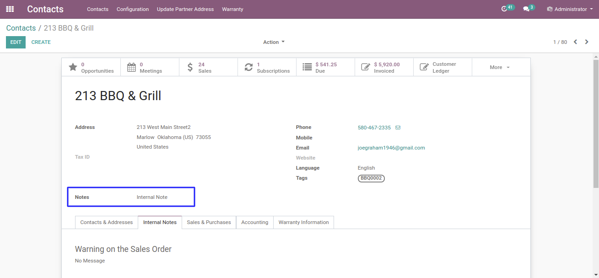

<section>
    <section class="oe_container">
         <div class="oe_row oe_centered">
            <div class="oe_centered">
                <h4 class="oe_slogan">
                    <b class="oe_slogan"><span class="fa fa-star fa-spin"/>
                        OMC-123 : Internal Notes need to show up on the Company's landing page not under a tab</b>
                </h4>
            </div>
        </div>

        <p align="left"> This Module is used to add customization into contacts.</p>

        <div class="oe_centered">
            <p>In below image you can find added fields in sale order form.
            </p>
        </div>
        <div class="oe_row oe_centered">
            <div class="oe_span12">
                
            </div>
        </div>
    </section>
</section>